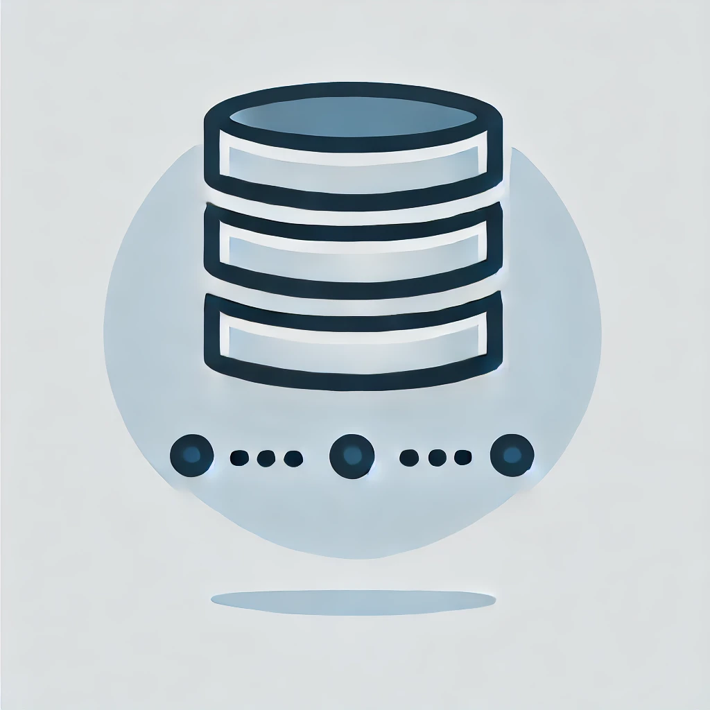

Stephen Babu Kasula
Data Analytics Specialist | Power BI Analyst | Business Data Analyst
Results-driven Data Analyst with over 4+ years of experience specializing in Data Analytics, Visualization, and Reporting. Proficient in Power BI, Python, SQL, and Advanced Excel, with strong backend expertise in Teradata and Oracle. Experienced in converting complex datasets into actionable insights, automating data workflows, and enabling data-driven decision-making through interactive dashboards.
Developed automated data ingestion and transformation pipelines using Python and Teradata SQL, improving fraud and AML data processing efficiency by 30%. Built optimized SQL scripts and stored procedures for high-volume financial transactions, reducing query execution time by 25%.
Designed and implemented AML rules, threshold checks, and alert-generation logic to identify unusual transaction patterns. Built Power BI dashboards for AML investigators, enabling real-time monitoring of alerts, risk scores, and customer activity trends. Ensured data accuracy through quality checks, anomaly detection, and reconciliation, while collaborating in an Agile Scrum environment to deliver compliant and reliable AML solutions.
Senior Data Analyst - Infosys
BANK OF AMERICA (Nov 2022-Present)
Data Analyst, Infosys
Dish Corporation (Dec 2021 – Oct 2022)
 Data Analysis: Cleaning, Transformation, Preprocessing
Data Analysis: Cleaning, Transformation, Preprocessing Visualization: Dashboards, DAX, KPI Tracking
Visualization: Dashboards, DAX, KPI Tracking Cloud Technologies: Google Cloud,AWS
Cloud Technologies: Google Cloud,AWS Visualization Tools: Power BI,Tableau
Visualization Tools: Power BI,Tableau

Databases: Oracle,Snowflake Cloud Platforms Google Cloud,AWS
Cloud Platforms Google Cloud,AWS
 Development Tools: PyCharm,VS Code, Jupiter Notebook
Development Tools: PyCharm,VS Code, Jupiter Notebook
 Project Management Tools: JIRA
Project Management Tools: JIRA
Andhra Loyola College - Vijayawada,Andhra Pradesh
K.V.R,K.V.R & M.K.R College - Khajipalem,Andhra Pradesh